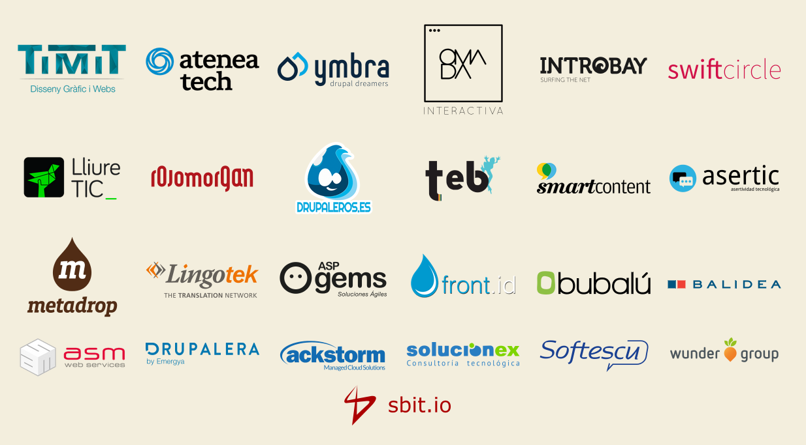
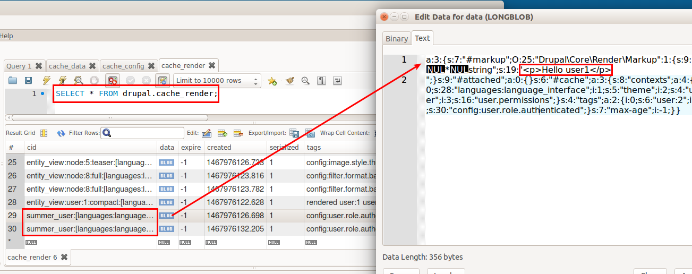

How to render blocks and fields with a good
cache strategy.
Jose Jiménez / @jjcarrion
Thanks!
and all the people involved in this event.
Thanks!
and all the individual sponsors.
About me
Jose Jiménez - jjcarrion


Developer at Wunderkraut Sweden
Agenda
- Drupal console
- Plugin system in Drupal 8 (just blocks)
- Dependency injection
- Cache system in Drupal 8
Drupal Console

composer require drupal/console:@stable
Create a module
Enable the module
drupal module:install
drush en drupal_summer
Create a simple block
Drupal 8 comes with the caching system enabled by default.
Great news!! ...but as a developer, you have to clear cache for every little change that you do in the code and that is extremely slow.
We need to remove the cache from the dev environment:
settings.php
if (file_exists(__DIR__ . '/settings.local.php')) {
include __DIR__ . '/settings.local.php';
}
settings.local.php
/**
* Enable local development services.
*/
$settings['container_yamls'][] = DRUPAL_ROOT . '/sites/development.services.yml';
$settings['cache']['bins']['render'] = 'cache.backend.null';
$settings['cache']['bins']['dynamic_page_cache'] = 'cache.backend.null';
development.service.yml
services:
cache.backend.null:
class: Drupal\Core\Cache\NullBackendFactory
Now we don't have cache locally, everything works fine... we can start to code!
Let's see how is the content of the example site.
Now we can create a more complicated block:
Now we need some logic
[Demo - Branch step-04]
After activate the default cache...
Without the cache everything will work, but in production we will have the default cache activeBack to the first example... If the content of the block depends on user information
public function build() {
$build = [];
$build['user'] = [
'#type' => 'html_tag',
'#tag' => 'p',
'#value' => 'Hello ' . \Drupal::currentUser()->getDisplayName(),
];
return $build;
}
How is the cache going to work?
not good :(
How can we fix it?
Types of cache:
- Page cache
- The old d7 cache
- Based on the url
- Just for anonymous.
- The responsible module is "Internal Page Cache" [page_cache].
- Dynamic page cache
- It works with cacheability metadata
- Not so fast as Page cache
- You have to think about cache ALWAYS!!!
- The responsible module is "Internal Dynamic Page Cache" [dynamic_page_cache].
Dynamic page cache
Cacheability metadata
- Cache keys: It will add a prefix in the database entries.
- Cache tags: Depending on entities nodes, users... $build['#cache']['tags'][] = 'node:2'; $build['#cache']['tags'][] = 'user:3'; $build['#cache']['tags'][] = 'taxonomy_term:3'; $build['#cache']['tags'][] = 'node_list';
- Cache context: Depending on the contexts you can have different version of an object (url.path, url.query_args, user.permission, cookies:name You can extend the list of contexts.
- Max age: time in minutes that the object is going to be cached
We have to build a proper render array and set the keys for it, so we can invalidate the data as we need.
To work locally we need to add the normal cache again, commenting out the cache.backend.null:
settings.local.php
/**
* Enable local development services.
*/
#$settings['cache']['bins']['render'] = 'cache.backend.null';
Let's fix both examples
[Demo - Branch step-05]
Database
More examples
public function build() {
$build = [];
$message = \Drupal::config('project_layout.footer_settings')->get('message');
$message = check_markup($message['value'], $message['format']);
$build['message'] = array(
'#type' => 'inline_template',
'#template' => '',
'#context' => array(
'message' => $message,
),
'#cache' => array(
'tags' => ['config:project_layout.footer_settings'],
),
);
return $build;
}$variables['#cache'] = array(
'contexts' => ['url.path', 'url.query_args'],
);
$cases = array(
'cases' => array(
'#theme' => 'current_case',
'#items' => $items,
'#title' => t('Current cases'),
'#cache' => [
'max-age' => 900,
],
),
);Big Pipe
In core as an experimental module since 8.1.0
Based on placeholder for lazy buildings
#create_placehooder = TRUE
#lazy_builder = [...,[]]
auto_placeholder_conditions in service.yml